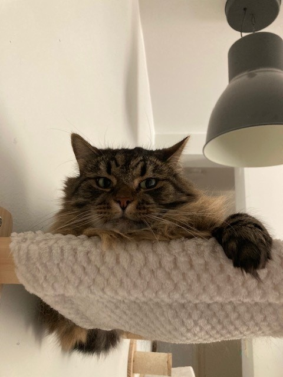
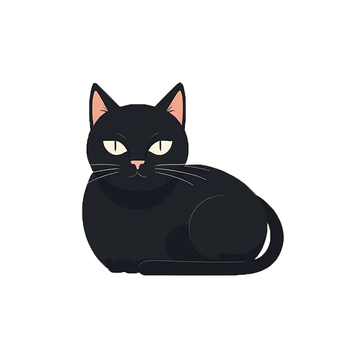
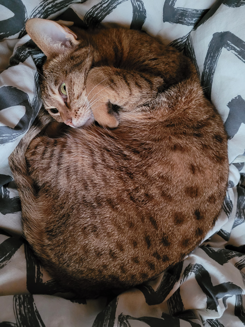
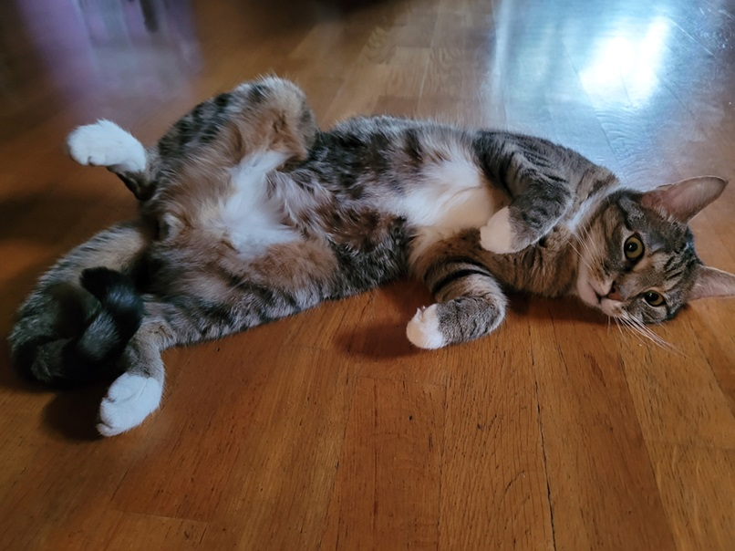
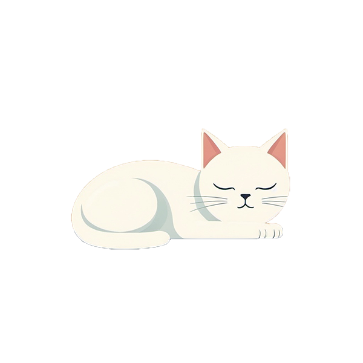

Kissamme
Kahvilassamme on vakituisesti viisi kissaa, mutta meillä on silloin tällöin myös vierailevia tähtiä, kun otamme kissan väliaikaisesti hoitoomme. Kaikki kissamme ovat ihmisrakkaita ja pitävät läheisyydestä, mutta otathan huomioon, että hekin kaipaavat joskus omaa aikaa ja saattavat olla omissa oloissaan. Annathan kissan itse lähestyä sinua, etkä jahtaa tai piiritä häntä! Listasta nimeä klikkaamalla voit tutustua kissoihin paremmin:
Tuuloma
Tuuloma on 7-vuotias, ruskearaidallinen ja pitkäkarvainen kissaneiti. Hän tykkää kiivetä korkealle, ja usein löydätkin hänet istumasta kiipeilypuun tai -telineen korkeimmalta tasolta. Tuuloma on hitaasti lämpiävä luonne ja nauttii eniten, kun saa katsella vieraita kauempaa.
Tonava
Tonava on 7-vuotias, jolla on lyhyt musta turkki. Tonava ja Tuuloma ovat parhaita kavereita, vaikka joskus he kinastelevatkin parhaista löhöilypaikoista. Tonava on perso herkuille, joten hän saattaa kärkkyä tähteitäsi! Hän osaa myös tehdä temppuja herkkujen eteen, ja halutessasi voit kysyä henkilökuntaamme näyttämään.
Kiira
Kiira on 10-vuotias Ocicat-kissaneiti. Luonteeltaan Kiira on erittäin ihmisläheinen ja ihmisrakas kissa, joka tykkää olla mukana ihan kaikessa. Kiiran lempipuuhia on jahdata leluja sekä kiipeillä ikkunalaudoilla ja ylähyllyillä. Kiira tulee mielellään syliin istumaan ja rakastaa rapsutuksia. Kiira viettää eniten aikaa Luxin läheisyydessä.
Luxi
Luxi on 12-vuotias vanha setäkissa. Luxi mielellään viettää aikansa makoillen, ihmisiä seuraten ja rapsutuksia kerjäten. Luxin lempileikkejä on oman pehmolelun riepottelu ja narujen jahtaaminen. Luxin seurasta yleensä löytää Kiiran ja yhdessä he kerjäävät herkkuja asiakkailta.
Kerttu
Kerttu on 12-vuotias valkoinen kissarouva. Hän viettää usein mieluummin aikaa ihmisten kuin kissakavereiden kanssa. Kertun näet siis todennäköisesti pöytäsi alla tai päällä loikoilemassa. Hän rakastaa rapsutuksia ja juttelee mielellään kanssasi.